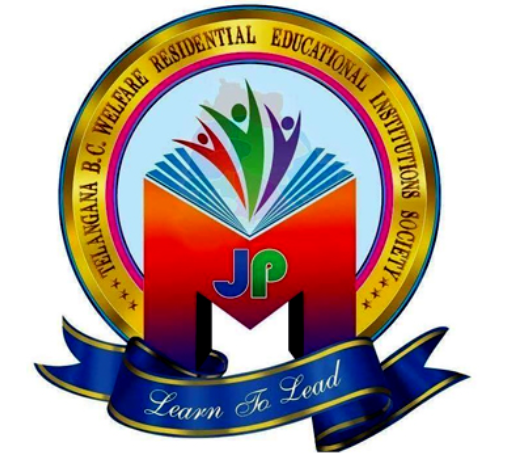
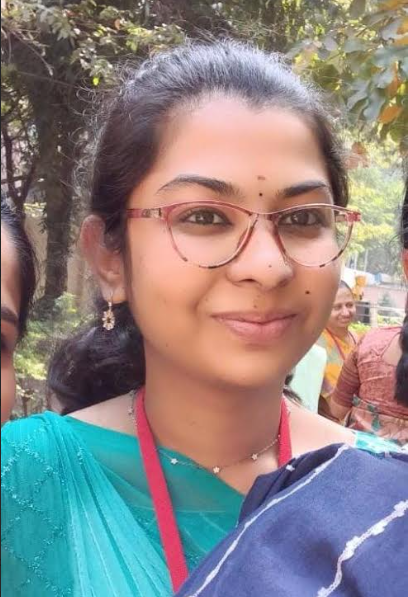
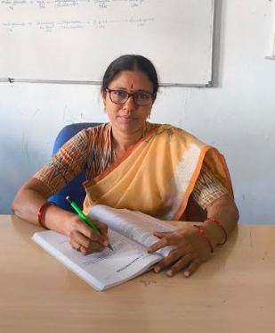
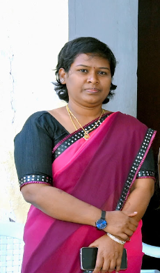
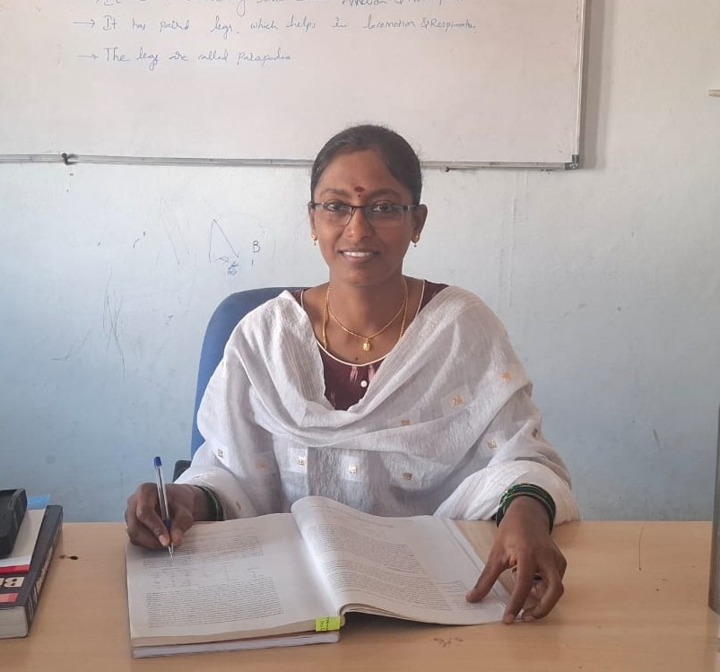
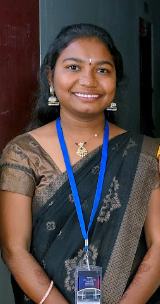
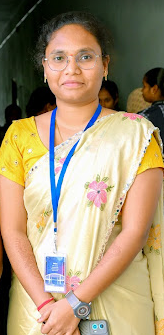

Life Sciences
- Microbiology
- Botany
- Zoology
- Nutrition


The Department of Microbiology focuses on the study of microorganisms, their roles in health, environment, and industry.
The department provides students with strong theoretical knowledge along with practical laboratory and research experience. With experienced faculty and well-equipped laboratories, students are encouraged to develop microbiological research skills and contribute to public health and scientific innovation.

The Department of Botany focuses on the scientific study of plants and their vital role in the environment.
The department provides students with strong knowledge in plant biology, ecology, and biodiversity through both theoretical learning and practical laboratory work. With experienced faculty and well-equipped laboratories, students are encouraged to develop research skills and environmental awareness. The department aims to promote conservation, sustainable development, and a deeper understanding of plant life.

The Department of Zoology focuses on the scientific study of animals, their structure, behavior, evolution, and ecological roles.
The department provides students with strong theoretical knowledge along with practical laboratory and field-based learning experiences. With experienced faculty and well-equipped laboratories, students are encouraged to develop research skills and environmental awareness. The department aims to promote the conservation of wildlife and a deeper understanding of animal diversity and life processes.


The Department of Nutrition focuses on the study of food, diet, and health sciences to promote well-being.
The department provides students with theoretical knowledge along with practical experience in nutrition and dietetics. With experienced faculty, students are encouraged to develop research skills and health awareness. The department aims to promote healthy lifestyles, scientific understanding of food, and overall student wellness.

